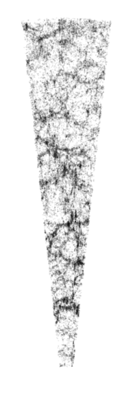
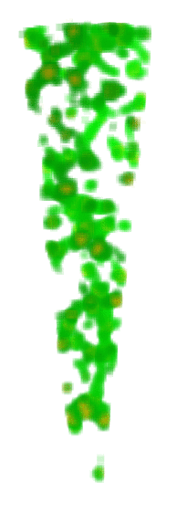

I am part of the GAMA collaboration. For my thesis I have been working on an algorithimn which, starting from the positions of galaxies as measured by the GAMA team, picks out the different parts of the cosmic web. Since we live in 3-dimensions, we can separate structures in to 4 classes, based on the number of collapsed dimensions. I classify structures which have collapsed in 0,1,2 and 3 dimensions as voids, sheets, filaments and knots respectively.
The images below show a sample of galaxies in a region observed by GAMA. You can think of the Earth as being at the bottom tip of the cone. When we use the telescope to look out into space in this particular direction (up the page), each dot in the image represents a galaxy which we can see. The points near the top of the cone represent galaxies around 1000Mpc away from us (or about 30000000000000000000000000m away!).
You can see that the galaxies are not evenly distributed in space, but form a web-like structure. To test our understanding of the Universe it is useful to see whether we can predict how structures behave and vary in different parts of this web. To do so requires a way to define the different parts of the web within the observed regions, which is what I have been working on. The central image below shows filamentary structures which have been identified in green, along with knot regions (the very dense parts of the Universe where most galaxies are found) in yellow. On the right, the red blobs show voids within the GAMA field, regions which are much less dense than elsewhere.
